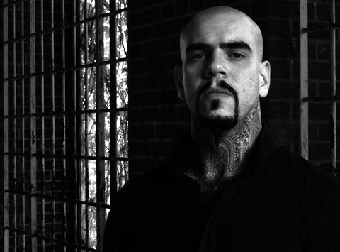
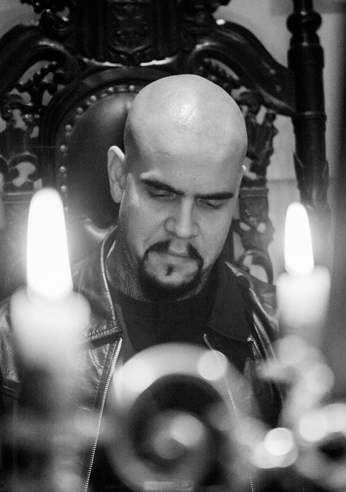

ARTWORK
Here is where the artists meet.
Artist Spotlight
Vincent Castiglia is an American painter. He is internationally acclaimed for his figurative paintings with metaphysical and often nightmarish subject matters. Castiglia paints exclusively in human blood (iron oxide) on paper. All references to interviews, outside sources will be listed below.
Blockquote
I sought the most direct and personal connection with my work, one that could not lie or be reproduced. Although the paintings are often thematic, they are also quite visceral, and I believe it is because of this that the response has been so strong. The creative process is very honest and cathartic for me, and is an intermingling of feelings and experiences, aspirations and visions, all spontaneously congealing on the canvas.
~Vincent Castiglia
Art Work
All the artwork shown below belongs to Vincent Castiglia.
"The Horror Show" Artist Spotlight
Born on April 8, 1982 in Brooklyn, New York; Vincent Castiglia is an artist who is known for his monochromatic paintings that are painted with human blood. Well to be precise, his own blood.Squeamish? Don't scroll down. For over a decade Mr. Castiglia has painted in his own blood. These paintings are a psyche mind-trip as they examine humanity, life and death. Each piece embodies elements of his own life and his own experiences, and are translated onto canvas by the use of figurative Surrealism. When I first stumbled across the work of Mr. Castiglia, I was astounded (being an artist myself) by the attention to detail and beautiful soft shading that I can only do in my dreams. To be quite honest, I was at first quite astounded at his choice of medium. Wouldn't pencil, watercolor do just as well? Once I decided to look into him more, that was my sole question. And he answered it. The work, what he paints, is such a heavy, heavy topic that he felt that the substance in which he was working need to be more intimate, connect on a personal level with him.***
In 2008, Vincent Castiglia was the first American to have a solo exhibition to be featured in H.R. Giger's museum in Switzerland. "Giger was certainly my greatest inspiration as an artist, decades before I’d met him, then a mentor after we’d met."***
John Borowski, an award winning independent filmmaker, plans to make a movie about Vincent, entitled: "Bloodlines: The Art and Life of Vincent Castiglia." I, for one, am quite anxious to see the project when it is completely finished. Borowski said that he hopes for the film (documentary) to be, possibly, released in January of 2016.
When looking at his work, I often become
lost in thought, thoughts that follow the psychological path the painting has laid. That being said, it is quite rare that there is art that can make you reflect and think as much as some of these pieces do. Perhaps its just me. But I still find his artwork to be very well executed and very detail oriented. (Which is something I absolutely adore.) The last recent exhibition of Mr. Castiglia's
work was on April 16 in New York City entitled "Archetypes".
Vincent Castiglia is not just a "man who paints in blood". He is a man who "paints his life in blood" through Surrealism and of course, his own blood. To be honest, I quite admire him as an artist due to his want to be able to have a deep connection with his art. (I'm not saying he's the only one) however, he is one of the very few who is willing to focus on the darker side of our mortality; our exsistence.
After all, they're can't be light without the dark.
~~
Citations/References
***-Vincent Castiglia-CVLT Nation Artist Interview (November 19, 2014)
Examiner.com - Strange News Examiner -"Vincent Castiglia talks blood painting and his end of the world exhibiton" (December 10, 2012)
Creep Machine Magazine - Interview: Vincent Castiglia (April 4, 2010)